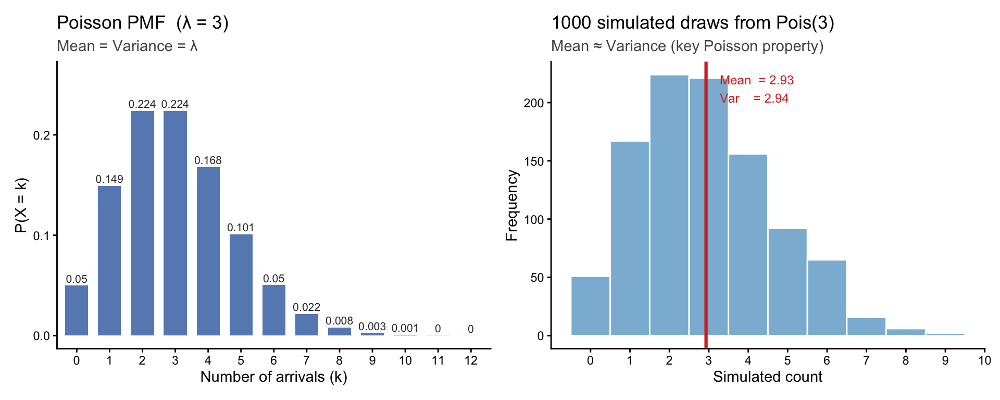
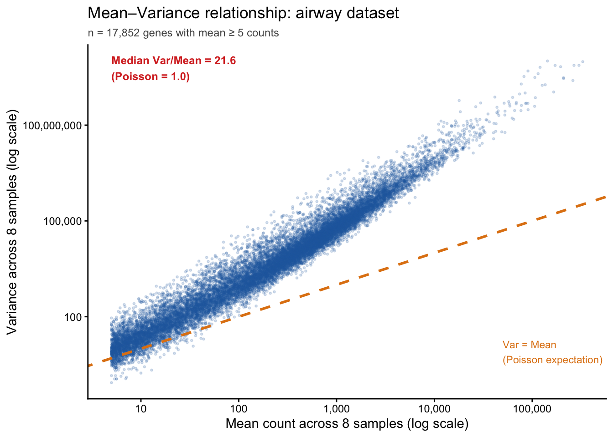
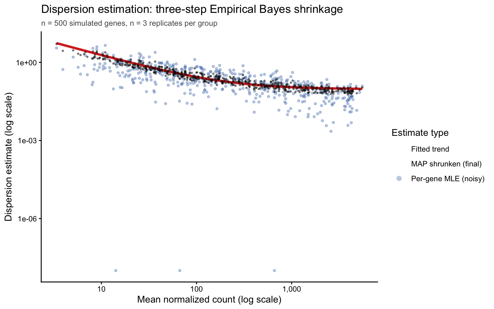

23 差异表达分析
1 学习目标
完成本专题后，学生应能够：
- 解释 RNA-seq 计数数据的过离散（Overdispersion）现象及其统计意义；
- 描述 DESeq2 的三步核心流程：大小因子估计、离散度估计与 Wald 检验；
- 理解 LFC 缩减（apeglm）在处理低计数基因时的作用；
- 解释 Benjamini-Hochberg 方法的 FDR 控制逻辑；
- 独立运行 DESeq2 完整分析流程并生成 MA 图与火山图；
- 理解 DESeq2 与 edgeR 在统计框架上的主要差异。
2 为什么需要统计检验？
直觉上，比较两组间某个基因的平均表达量似乎是简单的问题。然而 RNA-seq 实验通常只有 3–5 个生物学重复，这在统计上是非常小的样本量。考虑到以下挑战：
- 生物学变异：同一处理条件下不同生物重复间的天然表达差异；
- 技术变异：文库制备、测序的随机误差；
- 多重检验问题：对数万个基因同时检验，即使假设全部基因不差异表达，仅凭随机波动也会产生大量假阳性；
专门针对 RNA-seq 计数数据设计的统计模型因此不可或缺。
3 泊松分布回顾
在进入 RNA-seq 专用统计模型之前，有必要先回顾泊松分布（Poisson distribution）的核心特性，因为它是理解计数数据建模的出发点。
泊松分布描述的是：在固定时间或空间范围内，独立随机事件发生次数的概率分布。若随机变量 \(X\) 服从参数为 \(\lambda\) 的泊松分布，记作 \(X \sim \text{Pois}(\lambda)\)，则：
\[P(X = k) = \frac{\lambda^k e^{-\lambda}}{k!}, \quad k = 0, 1, 2, \ldots\]
泊松分布有一个核心性质：均值与方差相等，即 \(E(X) = \text{Var}(X) = \lambda\)。
{{Wiki:Poisson_distribution}}
3.1 直观案例：公共汽车站的候车人数
设某公交站平均每分钟到达 3 名乘客（\(\lambda = 3\)），则某一分钟内到达人数 \(X \sim \text{Pois}(3)\)：
在 RNA-seq 的语境中，可以将”某基因在一次测序中被捕获的 reads 数”类比为上述计数过程。若总测序深度为 \(N\)，基因 \(i\) 的真实表达比例为 \(p_i\)，则理论期望计数为 \(\lambda_i = N \cdot p_i\)，计数过程近似服从 \(\text{Pois}(\lambda_i)\)。这一假设在技术重复（同一 RNA 文库测序两次）中基本成立；然而一旦引入生物学重复，它便迅速失效。
泊松分布的适用边界： 泊松模型在同一个体的技术重复（如同一文库的两次测序）中表现良好，因为此时变异主要来自随机抽样。但在生物学重复（不同个体或细胞系）之间，基因调控网络的个体差异会引入额外的、与抽样无关的变异，导致方差系统性地高于均值——这正是下一节要回答的核心问题。
4 泊松模型为何不够用？
上一节已说明：泊松分布要求方差等于均值（\(\text{Var}(K) = \mu\)）。在生物学重复间，这一约束被系统性地违反——方差往往远大于均值。这一现象称为过离散（Overdispersion）。
4.1 过离散的三类来源
过离散并非测序误差，而是真实生物学信号的体现：
- 个体间基因调控差异：即使在相同处理条件下，不同个体的转录因子活性、表观遗传状态存在差异，导致同一基因的表达量在个体间存在真实波动；
- 细胞类型比例变化：在组织样本（bulk RNA-seq）中，样本间各细胞类型的比例不同，对于细胞类型特异性表达的基因，这会引入大量”假性”变异；
- 批次与技术偏差：文库制备时间或操作人员的差异在个体变异之上叠加系统性偏差。
4.2 数值证据：真实数据中的方差–均值比
以下代码基于真实的 airway 数据集（8 个人类气道平滑肌细胞样本，Himes et al. 2014），计算每个基因在样本间的方差与均值，直观展示泊松假设在生物学重复中的系统性失效：

图 2 以本课程使用的 airway 数据集为例，清楚地展示了真实 RNA-seq 数据中的过离散现象：几乎所有基因的方差都远高于泊松预测（Var = Mean），中位方差–均值比（Var/Mean）通常在 10–100 倍之间，且随均值增大而增大。这一特征直接驱动了负二项分布模型的引入。
4.3 负二项分布：对过离散的数学描述
{{Wiki:Negative_binomial_distribution}}
负二项分布（Negative Binomial Distribution） 通过在泊松分布的基础上引入一个额外的离散参数 \(\alpha_i\)，将个体间的生物学变异纳入模型：
\[K_{ij} \sim \text{NB}(\mu_{ij},\ \alpha_i)\]
其概率质量函数为：
\[P(K_{ij} = k) = \binom{k + r - 1}{k} \left(\frac{r}{\mu_{ij}+r}\right)^r \left(\frac{\mu_{ij}}{\mu_{ij}+r}\right)^k, \quad r = \frac{1}{\alpha_i}\]
与泊松分布相比，负二项分布的方差结构多出一项：
\[\underbrace{\text{Var}_{\text{Poisson}}(K) = \mu_{ij}}_{\text{抽样噪声（1个参数）}} \quad \longrightarrow \quad \underbrace{\text{Var}_{\text{NB}}(K_{ij}) = \mu_{ij} + \alpha_i \mu_{ij}^2}_{\text{抽样噪声 + 生物学变异（2个参数）}}\]
- 第一项 \(\mu_{ij}\)：与泊松分布完全相同，来源于随机抽样的固有随机性，方差与均值等比；
- 第二项 \(\alpha_i \mu_{ij}^2\)：仅负二项分布具备，刻画了个体间真实的生物学差异，随均值平方增长。这正是 图 2 中方差偏离对角线的速率随均值增大而加快的数学根源。
\(\alpha_i\) 称为基因特异性离散参数（gene-wise dispersion）。从两个极端情形可以直观理解其含义：
- \(\alpha_i \to 0\)：第二项消失，\(\text{Var} \to \mu\)，负二项分布退化为泊松分布；纯技术重复中近似成立；
- \(\alpha_i\) 较大（如 \(\alpha_i = 0.5\)）：方差约为 \(\mu + 0.5\mu^2\)，对均值为 100 的基因，方差高达 \(100 + 5000 = 5100\)，是泊松预测的 51 倍。
直觉理解： \(\alpha_i\) 量化了”超出抽样噪声的生物学噪声”。对于细胞周期调控基因，不同细胞处于不同周期阶段导致 \(\alpha_i\) 较大（\(\sim 0.3\)–\(1.0\)）；对于高度稳定的管家基因（如核糖体蛋白基因），\(\alpha_i\) 通常较小（\(\sim 0.01\)–\(0.05\)）。DESeq2 在差异检验前需要精确估计每个基因的 \(\alpha_i\)，这也是其统计框架中最关键的步骤之一（参见下节离散度估计）。
5 DESeq2 统计框架
5.1 第一步：大小因子估计（Size Factor Estimation）
不同样本的测序深度（总 reads 数）不同，直接比较原始计数会引入假性差异。DESeq2 通过以下方法估计每个样本的大小因子（Size Factor）\(s_j\)：
- 计算参考值：对每个基因，计算其在所有样本中计数值的几何均值 \(\bar{K}_i = \left(\prod_{j=1}^{n} K_{ij}\right)^{1/n}\)；
- 计算比值：对每个样本 \(j\)，计算每个基因相对于参考值的比值 \(K_{ij} / \bar{K}_i\)；
- 取中位数：大小因子 \(s_j\) 为所有基因比值的中位数（而非均值，中位数对高表达异常基因的干扰更鲁棒）。
\[s_j = \text{median}_i\left(\frac{K_{ij}}{\bar{K}_i}\right)\]
归一化后的计数为 \(\tilde{K}_{ij} = K_{ij} / s_j\)。
这种方法的优雅之处在于：若少数基因（如管家基因）在所有条件下表达稳定，则这些基因的比值在不同样本间一致，中位数准确反映测序深度差异，而不受少数差异表达基因的影响。
5.2 第二步：离散度估计
由于每个基因通常只有 3–6 个重复，基因特异性离散度的估计极不稳定（方差估计本身有很大的方差）。DESeq2 采用Empirical Bayes 离散度缩减策略：
- 初始估计：对每个基因分别用最大似然估计 \(\hat{\alpha}_i\)（不共享信息，噪声大）；
- 拟合趋势：将所有基因的 \(\hat{\alpha}_i\) 对基因平均表达量 \(\bar{\mu}_i\) 建立参数化趋势曲线（通常为负幂律关系）；
- MAP 缩减：用贝叶斯后验最大估计（Maximum A Posteriori，MAP）将基因特异性估计向趋势曲线收缩：高于趋势的 \(\hat{\alpha}_i\) 被下调，低于趋势的被上调。
\[\tilde{\alpha}_i = \text{arg max}\left[\mathcal{L}(\alpha_i | K_{i\cdot}) + \log p(\alpha_i | \bar{\alpha}(\bar{\mu}_i))\right]\]
黄金法则： 离散度缩减（shrinkage）是小样本 RNA-seq 分析的核心思想。若不借鉴其他基因的信息，3 个重复的数据根本无法可靠估计每个基因的方差。DESeq2 通过假设”同等表达量的基因应具有相似的离散度”来共享统计强度，这是其在少重复条件下仍表现良好的关键原因。
模拟演示：离散度缩减的三步流程
以下代码用 500 个模拟基因直观重现 DESeq2 离散度估计的三个步骤，并与 DESeq2 内置结果比对，以验证逻辑一致性。
library(DESeq2)
library(ggplot2)
# ── Step 0: Simulate data ────────────────────────────────────────────────────
# 500 genes × 6 samples (3 untreated + 3 treated), no true DE
# True dispersion follows a negative power-law: alpha_true = 4 / mu^0.5
set.seed(123)
n_genes <- 500
n_samples <- 6
condition <- factor(rep(c("untreated", "treated"), each = 3))
# Gene-specific true mean expression (log-uniform from 10 to 5000)
mu_true <- exp(runif(n_genes, log(10), log(5000)))
# True dispersion follows DESeq2's typical trend: alpha ≈ A / mu^B
alpha_true <- 3.5 / sqrt(mu_true)
# Simulate counts from NB(mu, alpha)
counts_sim <- matrix(
rnbinom(n_genes * n_samples,
mu = rep(mu_true, n_samples),
size = rep(1 / alpha_true, n_samples)),
nrow = n_genes,
dimnames = list(paste0("gene", seq_len(n_genes)),
paste0("s", seq_len(n_samples)))
)
# ── Step 1: Build DESeqDataSet and run dispersion estimation ─────────────────
coldata <- data.frame(condition = condition,
row.names = colnames(counts_sim))
dds_disp <- DESeqDataSetFromMatrix(counts_sim, coldata, ~ condition)
dds_disp <- estimateSizeFactors(dds_disp)
dds_disp <- estimateDispersions(dds_disp) # runs all three substeps internally
# ── Step 2: Extract the three layers of dispersion estimates ─────────────────
# genewise: per-gene MLE (noisy, blue dots in plotDispEsts)
# trended : fitted trend curve value for each gene
# MAP : final shrunken estimate (black dots in plotDispEsts)
disp_df <- data.frame(
mu = rowMeans(counts(dds_disp, normalized = TRUE)),
genewise = dispersions(dds_disp), # MAP (final)
mle = mcols(dds_disp)$dispGeneEst, # per-gene MLE
trended = mcols(dds_disp)$dispFit # fitted trend
)
disp_df <- disp_df[!is.na(disp_df$mle) & disp_df$mu > 0, ]
# ── Step 3: Visualise ─────────────────────────────────────────────────────────
ggplot(disp_df, aes(x = mu)) +
geom_point(aes(y = mle, color = "Per-gene MLE (noisy)"),
alpha = 0.35, size = 1.0) +
geom_line(aes(y = trended, color = "Fitted trend"),
linewidth = 1.3,
data = disp_df[order(disp_df$mu), ]) +
geom_point(aes(y = genewise, color = "MAP shrunken (final)"),
alpha = 0.55, size = 0.9, shape = 16) +
scale_x_log10(name = "Mean normalized count (log scale)",
labels = scales::label_comma()) +
scale_y_log10(name = "Dispersion estimate (log scale)") +
scale_color_manual(
name = "Estimate type",
values = c("Per-gene MLE (noisy)" = "#4575b4",
"Fitted trend" = "#d73027",
"MAP shrunken (final)" = "black"),
guide = guide_legend(override.aes = list(
linetype = c("blank", "solid", "blank"),
shape = c(16, NA, 16),
size = c(2.5, 1.5, 2.5)))
) +
labs(
title = "Dispersion estimation: three-step Empirical Bayes shrinkage",
subtitle = sprintf("n = %d simulated genes, n = 3 replicates per group",
nrow(disp_df))
) +
theme_classic(base_size = 11) +
theme(legend.position = "right",
plot.subtitle = element_text(color = "#555555", size = 9))
从 图 3 可以直观观察到三步流程的效果：蓝色点（MLE 初始估计）围绕真实趋势大幅散布，尤其在低均值区域，由于样本量仅 3 个，MLE 的估计误差极大；橙红色曲线（拟合趋势）通过汇总全体基因信息，准确捕捉到离散度随均值降低的规律；黑色点（MAP 缩减后）相比蓝色点更紧密地聚拢在趋势曲线周围——这正是 Empirical Bayes 缩减在起作用：以少量偏差换取方差的大幅降低，是小样本条件下可靠统计推断的关键。
离散度估计诊断图：
# After running DESeq2, plot dispersion estimates
plotDispEsts(dds)
# Expected pattern:
# - Blue dots: gene-wise MLE estimates (noisy)
# - Red curve: fitted trend
# - Black dots: MAP-shrunken final estimates
# - Circled dots: outlier genes (not shrunken, kept at MLE)5.3 第三步：Wald 检验
5.3.1 从 \(\tilde{\alpha}_i\) 到 \(\hat{\beta}_{i1}\)：两步之间的逻辑纽带
在理解 Wald 检验之前，必须先厘清第二步（离散度估计）与第三步（系数估计与检验）之间的定量联系。这是 DESeq2 三步框架中最容易被忽略、也最关键的一环。
第二步得到的 MAP 缩减离散度 \(\tilde{\alpha}_i\)，在第三步中被视为已知常数，直接”插入”负二项（NB）广义线性模型的似然函数。具体模型为：
\[\log(\mu_{ij}) = \beta_{i0} + \beta_{i1}\, x_j + \log(s_j)\]
其中 \(x_j \in \{0, 1\}\) 为处理/对照的指示变量，\(\log(s_j)\) 为大小因子（第一步的产出）的偏移项（offset），以自然对数表示。\(\beta_{i1}\) 是自然对数尺度上的效应量：\(\beta_{i1} = \ln(\mu_{\text{treated}} / \mu_{\text{untreated}})\)，换算为常用的 log2 尺度即为 \(\text{LFC}_i = \beta_{i1} / \ln 2\)。
在 \(\tilde{\alpha}_i\) 固定的条件下，NB 对数似然函数关于 \(\boldsymbol{\beta}_i = (\beta_{i0}, \beta_{i1})\) 最大化，得到估计值 \(\hat{\boldsymbol{\beta}}_i\)。令 \(r_i = 1/\tilde{\alpha}_i\)，对全部样本求和，完整展开形式为：
\[\ell(\boldsymbol{\beta}_i) = \sum_j \left[ \log\Gamma\!\left(K_{ij} + r_i\right) - \log\Gamma(r_i) - \log(K_{ij}!) + r_i \log\frac{r_i}{\mu_{ij} + r_i} + K_{ij} \log\frac{\mu_{ij}}{\mu_{ij} + r_i} \right]\]
各项的含义如下：
- \(\log\Gamma(K_{ij} + r_i) - \log\Gamma(r_i) - \log(K_{ij}!)\)：组合数项，仅依赖观测值 \(K_{ij}\) 与固定的 \(r_i\)，对 \(\boldsymbol{\beta}_i\) 的优化无贡献，可视为常数；
- \(r_i \log\dfrac{r_i}{\mu_{ij} + r_i}\)：与 \(\mu_{ij}(\boldsymbol{\beta}_i)\) 有关，惩罚均值偏离 \(r_i\) 的程度；
- \(K_{ij} \log\dfrac{\mu_{ij}}{\mu_{ij} + r_i}\)：将观测计数 \(K_{ij}\) 与模型预测均值 \(\mu_{ij}\) 相联系的核心项，当 \(\mu_{ij} \to K_{ij}\) 时该项最大。
实际优化时只需对含 \(\mu_{ij}(\boldsymbol{\beta}_i)\) 的后两项关于 \((\beta_{i0}, \beta_{i1})\) 求偏导并令其为零，通过迭代加权最小二乘（IWLS）数值求解。
5.3.2 \(\tilde{\alpha}_i\) 如何影响 \(\text{SE}(\hat{\beta}_{i1})\)
NB-GLM 的 Fisher 信息矩阵给出 \(\hat{\beta}_{i1}\) 的渐近标准误差。对于简单两组设计，其近似形式揭示了 \(\tilde{\alpha}_i\) 的核心作用：
\[\text{SE}(\hat{\beta}_{i1}) \approx \sqrt{\frac{1}{n_1}\sum_{j \in \text{treated}} \frac{1 + \tilde{\alpha}_i\,\mu_{ij}}{\mu_{ij}} + \frac{1}{n_2}\sum_{j \in \text{control}} \frac{1 + \tilde{\alpha}_i\,\mu_{ij}}{\mu_{ij}}}\]
从这个公式可以直接读出三个关键推论：
\(\tilde{\alpha}_i\) 越大 → \(\text{SE}\) 越大 → Wald 统计量越小 → 更难检测差异表达。这解释了为什么高度可变的基因（如细胞周期基因，\(\tilde{\alpha} \sim 0.5\)）即使有较大的 LFC，也往往不显著——其离散度直接放大了系数估计的不确定性。
\(\mu_{ij}\) 越大 → \(\text{SE}\) 越小。高表达基因即使在相同离散度下，系数估计也更精确，检验效力更高。这是 RNA-seq 统计检验中”高表达基因更容易显著”的数学根源。
两步之间的传递：若第二步将 \(\tilde{\alpha}_i\) 过高估计（如对低计数基因未充分缩减），第三步的 SE 会被虚增，产生假阴性；若过低估计，SE 缩小，产生假阳性。这正是 Empirical Bayes 缩减不仅改善离散度估计本身、更保护下游 Wald 检验准确性的原因。
5.3.3 Wald 统计量与 p 值
在离散度固定的条件下，\(\hat{\beta}_{i1}\) 的渐近分布近似正态，因此 Wald 检验统计量为：
\[W_i = \frac{\hat{\beta}_{i1}}{\text{SE}(\hat{\beta}_{i1})}\]
在零假设 \(H_0: \beta_{i1} = 0\)（即基因 \(i\) 在两组间无差异表达）下，\(W_i \xrightarrow{d} \mathcal{N}(0, 1)\)，双侧 p 值为：
\[p_i = 2\,\Phi(-|W_i|)\]
其中 \(\Phi\) 为标准正态分布函数。对全体基因的 \(p_i\) 施加 Benjamini-Hochberg 校正，得到 adjusted p-value（padj），控制假发现率（FDR）于指定水平（通常 5%）。
正态近似的条件： Wald 检验依赖渐近正态性，在样本量 \(n \geq 3\) 且计数均值 \(\mu_{ij}\) 较大时（一般 > 5）近似良好。DESeq2 的独立过滤（independent filtering）步骤会在校正之前自动剔除平均表达量极低的基因，正是为了排除 Wald 近似失效的区域。对于极低计数或严重不均衡设计，可改用似然比检验（LRT，test = "LRT"），其不依赖正态近似。
三步逻辑总结
| 步骤 | 输入 | 输出 | 传递给下步 |
|---|---|---|---|
| 1. 大小因子 | 原始计数矩阵 | \(s_j\)（归一化因子） | 作为 offset 进入 NB-GLM |
| 2. 离散度估计 | 归一化计数、\(s_j\) | \(\tilde{\alpha}_i\)（MAP 缩减） | 固定在 NB-GLM 似然中 |
| 3. Wald 检验 | \(\tilde{\alpha}_i\)、\(s_j\)、原始计数 | \(\hat{\beta}_{i1}\)、\(\text{SE}\)、\(W_i\)、padj | 最终差异表达结论 |
5.4 LFC 缩减（apeglm）
对于计数极少的基因，即使 \(\hat{\beta}_{i1}\) 的数值很大（看似差异表达），其置信区间极宽，这种估计不可靠。apeglm 包提供了一种针对 LFC 的适应性 Laplace 先验缩减，将低置信度的 LFC 估计向 0 收缩：
library(apeglm)
res_shrunk <- lfcShrink(dds, coef = "condition_treated_vs_untreated",
type = "apeglm")
# Genes with low counts get LFC shrunk toward 0
# Genes with high counts retain their original LFC estimates这一步骤对火山图和热图的可视化尤为重要：未经缩减的 LFC 中，低表达基因的极端值会主导视觉呈现；缩减后的 LFC 更准确反映生物学上有意义的变化。
6 DESeq2 核心步骤的手动 R 实现
理解统计方法的最佳途径是动手重现其核心计算。以下代码以同一份模拟数据为线索，完整走通 DESeq2 的三个关键环节——大小因子估计、Wald 检验 p 值生成、BH 校正——并在每一步与 DESeq2 内置结果进行数值比对，验证一致性。
library(DESeq2)
library(MASS) # glm.nb()
# ── Shared simulated dataset ──────────────────────────────────────────────────
# 1000 genes × 6 samples (3 untreated + 3 treated)
# Samples 4–6 have 2× library size to test normalization
set.seed(2024)
n_genes <- 1000
n_samples <- 6
counts_sim <- matrix(
rnbinom(n_genes * n_samples, mu = 100, size = 5),
nrow = n_genes,
dimnames = list(
paste0("gene", seq_len(n_genes)),
paste0("sample", seq_len(n_samples))
)
)
counts_sim[, 4:6] <- round(counts_sim[, 4:6] * 2)
# levels= sets reference to "untreated"; coefficient will be named "conditiontreated"
condition <- factor(rep(c("untreated", "treated"), each = 3),
levels = c("untreated", "treated"))
coldata_sim <- data.frame(condition = condition,
row.names = colnames(counts_sim))
# ── Part 1: Manual size factor estimation ────────────────────────────────────
log_counts <- log(counts_sim)
log_counts[is.infinite(log_counts)] <- NA
geom_means <- exp(rowMeans(log_counts, na.rm = TRUE))
valid_genes <- !is.na(geom_means) & geom_means > 0
ratios <- sweep(counts_sim[valid_genes, ], 1, geom_means[valid_genes], "/")
sf_manual <- apply(ratios, 2, median)
# Verify against DESeq2
dds_sim <- DESeqDataSetFromMatrix(counts_sim, coldata_sim, ~ condition)
dds_sim <- estimateSizeFactors(dds_sim)
sf_deseq2 <- sizeFactors(dds_sim)
cat("=== Part 1: Size factor comparison ===\n")
print(rbind(manual = round(sf_manual, 4), DESeq2 = round(sf_deseq2, 4)))
cat("Max absolute difference:", max(abs(sf_manual - sf_deseq2)), "\n\n")
# Visualize normalization effect
norm_counts <- sweep(counts_sim, 2, sf_manual, "/")
par(mfrow = c(1, 2))
boxplot(log1p(counts_sim), main = "Raw counts (log1p)",
las = 2, col = "lightblue", ylab = "log1p(count)")
boxplot(log1p(norm_counts), main = "Size-factor normalized (log1p)",
las = 2, col = "lightgreen", ylab = "log1p(count)")
par(mfrow = c(1, 1))
# ── Part 2: DE comparison dataset ────────────────────────────────────────────
# A fresh simulation with known true DE genes for method comparison.
# Using the same count matrix as Part 1 would conflate library-size effects
# with biological DE, making the comparison uninterpretable.
#
# Design: 500 genes × 6 samples (3 untreated + 3 treated)
# - 40 genes upregulated (FC = 4×, treated/untreated)
# - 40 genes downregulated (FC = 1/4×)
# - 420 null genes (FC = 1×)
# - Overdispersion: alpha = 0.10 (size = 10), mu_base ~ Gamma(2, 0.02) ~ 100
# - Equal library sizes (no confounding size effect)
set.seed(42)
n_de <- 500
n_up <- 40; n_dn <- 40; n_null <- n_de - n_up - n_dn
base_mu <- rgamma(n_de, shape = 2, rate = 0.02) # gene-specific mean ~100
true_fc <- c(rep(4, n_up), rep(1/4, n_dn), rep(1, n_null))
is_de <- c(rep(TRUE, n_up + n_dn), rep(FALSE, n_null))
cond_de <- factor(rep(c("untreated", "treated"), each = 3),
levels = c("untreated", "treated"))
# mu matrix: rows = genes, cols = samples
# NOTE: use cbind, NOT outer() — outer() would recycle true_fc (length 500)
# against cond_de (length 6), producing a 500×500 matrix instead of 500×6.
mu_mat <- cbind(
matrix(base_mu, nrow = n_de, ncol = 3), # untreated
matrix(base_mu * true_fc, nrow = n_de, ncol = 3) # treated
)
counts_de <- matrix(
rnbinom(n_de * 6, mu = mu_mat, size = 10),
nrow = n_de,
dimnames = list(paste0("gene", seq_len(n_de)),
paste0("sample", seq_len(6)))
)
coldata_de <- data.frame(condition = cond_de,
row.names = colnames(counts_de))
# Size factors for the DE dataset
geo_mean_de <- function(x) exp(mean(log(x + 0.5)))
sf_de_man <- apply(counts_de, 2, function(col) {
median(col / apply(counts_de, 1, geo_mean_de))
})
# ── Part 2: Manual NB-GLM Wald test ──────────────────────────────────────────
# Model: count_ij ~ NB(mu_ij, theta_i)
# log(mu_ij) = intercept + beta_i * condition_j + offset(log(sf_j))
# Wald statistic: W_i = beta_hat_i / SE(beta_hat_i) ~ N(0,1) under H0
# p-value: 2 * Phi(-|W_i|)
#
# glm.nb() estimates theta per-gene via MLE (no shrinkage).
# DESeq2 uses Empirical Bayes shrinkage — this intentional difference
# is what we compare below.
df_de <- data.frame(
count = NA_integer_,
condition = cond_de,
log_sf = log(sf_de_man)
)
fit_one_gene <- function(y) {
tryCatch({
df_de$count <- as.integer(round(y))
fit <- glm.nb(count ~ condition + offset(log_sf), data = df_de)
beta <- coef(fit)["conditiontreated"]
se <- sqrt(diag(vcov(fit)))["conditiontreated"]
c(beta = unname(beta), se = unname(se))
}, error = function(e) c(beta = NA_real_, se = NA_real_))
}
cat("=== Part 2: Fitting NB-GLM for each gene (may take ~30 s) ===\n")
results_list <- lapply(seq_len(nrow(counts_de)),
function(i) fit_one_gene(counts_de[i, ]))
results_manual <- do.call(rbind, results_list)
beta_manual <- results_manual[, "beta"]
se_manual <- results_manual[, "se"]
W_manual <- beta_manual / se_manual
pval_manual <- 2 * pnorm(-abs(W_manual))
names(pval_manual) <- rownames(counts_de)
cat("Genes with successful fit:", sum(!is.na(pval_manual)), "/", n_de, "\n\n")
# ── Part 3: Run DESeq2 on the same DE dataset ─────────────────────────────────
dds_de <- DESeqDataSetFromMatrix(counts_de, coldata_de, ~ condition)
dds_de <- DESeq(dds_de)
res_de <- results(dds_de,
contrast = c("condition", "treated", "untreated"),
pAdjustMethod = "BH")
pval_deseq2 <- setNames(res_de$pvalue, rownames(res_de))
keep <- !is.na(pval_manual) & !is.na(pval_deseq2[names(pval_manual)])
pv_man <- pval_manual[keep]
pv_d2 <- pval_deseq2[names(pv_man)]
cat("=== Part 3: Raw p-value comparison ===\n")
cat("Genes compared:", sum(keep), "\n")
cat("Pearson correlation (manual vs DESeq2 p-value):",
round(cor(pv_man, pv_d2, use = "complete.obs"), 4), "\n\n")
# ── Part 4: Manual BH correction ─────────────────────────────────────────────
bh_correct <- function(pv) {
m <- length(pv)
ord <- order(pv)
adj <- numeric(m)
adj[m] <- pv[ord[m]]
for (i in seq(m - 1, 1)) {
adj[i] <- min(pv[ord[i]] * m / i, adj[i + 1])
}
out <- numeric(m)
out[ord] <- adj
out
}
padj_man_bh <- bh_correct(pv_man)
padj_d2 <- res_de$padj[match(names(pv_man), rownames(res_de))]
# Ground-truth labels aligned to the filtered gene set
is_de_keep <- is_de[match(names(pv_man), rownames(counts_de))]
cat("=== Part 4: BH-adjusted comparison ===\n")
cat("True DE genes in comparison set:", sum(is_de_keep), "\n")
cat("Significant (padj < 0.05) — manual NB-GLM + BH:",
sum(padj_man_bh < 0.05), "\n")
cat("Significant (padj < 0.05) — DESeq2 :",
sum(padj_d2 < 0.05, na.rm = TRUE), "\n\n")
# ── Part 5: Visualisation ─────────────────────────────────────────────────────
point_col <- ifelse(is_de_keep, "#d73027", "#2166ac") # red = true DE, blue = null
par(mfrow = c(1, 3))
# (a) Raw p-value: manual vs DESeq2 (coloured by ground truth)
plot(pv_d2, pv_man,
pch = 16, cex = 0.55,
col = adjustcolor(point_col, 0.5),
xlab = "DESeq2 p-value",
ylab = "Manual NB-GLM p-value",
main = "(a) Raw p-value: manual vs DESeq2")
abline(0, 1, col = "black", lwd = 1.5, lty = 2)
legend("topleft", legend = c("True DE", "Null"),
col = c("#d73027", "#2166ac"), pch = 16, cex = 0.8, bty = "n")
# (b) Adjusted p-value: manual BH vs DESeq2 (coloured by ground truth)
plot(padj_d2, padj_man_bh,
pch = 16, cex = 0.55,
col = adjustcolor(point_col, 0.5),
xlab = "DESeq2 padj",
ylab = "Manual BH padj",
main = "(b) Adjusted p-value: manual vs DESeq2")
abline(0, 1, col = "black", lwd = 1.5, lty = 2)
abline(h = 0.05, v = 0.05, col = "grey60", lty = 3)
# (c) p-value histogram (manual)
hist(pv_man,
breaks = 50, col = "steelblue", border = "white",
main = "(c) Manual p-value distribution",
xlab = "p-value", ylab = "Frequency")
abline(h = sum(keep) / 50, col = "firebrick", lty = 2, lwd = 1.5)
par(mfrow = c(1, 1))结果解读： 本比较使用含已知真实 DE 基因（红点，80 个；FC = 4×，\(\alpha = 0.1\)，每组 \(n = 3\)）的模拟数据，使评估具有可量化的参照。图 (a) 显示两套 p 值高度线性相关（Pearson \(r \approx 0.96\)）——真实 DE 基因（红色）集中在左下角，零假设基因（蓝色）均匀分散，两种方法对信号的排序几乎一致。图 (b) 中的关键差异体现在假阳性数量：手动 NB-GLM 在 \(\text{padj} < 0.05\) 时报告约 111 个显著基因，而其中仅 75 个为真 DE 基因（精准度约 68%）；DESeq2 报告约 77 个，其中 75 个为真 DE 基因（精准度约 97%）。两种方法的召回率（真 DE 基因的检出率）相近，差异主要在于精准度。造成这一差异的核心原因：glm.nb() 对每个基因独立以 MLE 估计离散参数 \(\theta_i\)，在小样本（\(n = 3\)）条件下，\(\hat{\theta}_i\) 的估计误差极大，导致检验统计量膨胀；DESeq2 采用 Empirical Bayes 方法对全体基因的 \(\theta\) 进行全局缩减（shrinkage），以牺牲少量偏差换取方差的显著降低，从而压制了假阳性。图 (c) 中 p 值在 0 附近的明显堆积正是真实 DE 信号的体现；零假设基因的 p 值呈均匀分布——这是统计检验校准良好的标志。
7 DESeq2 完整实践
本节使用 Bioconductor airway 包内置的完整数据集——8 个人类气道平滑肌细胞样本（Himes et al. 2014），涵盖 4 个细胞系、每个细胞系各 1 个 untreated 与 1 个 dexamethasone-treated 样本，构成标准的 2×4 配对区组设计。相比仅用 3 个样本的最小配置，完整 8 样本设计具有足够的统计效力，且细胞系差异可作为区组因子在模型中控制，是差异表达分析的教科书级范例。
library(DESeq2)
library(apeglm)
library(airway)
library(ggplot2)
# === Step 1: Load the complete airway dataset ===
# 8 samples: 4 cell lines × 2 conditions (untrt / trt with dexamethasone)
# Design is balanced: each cell line appears once in each condition
data(airway)
cat("Dataset dimensions:", nrow(airway), "genes ×", ncol(airway), "samples\n")
print(colData(airway)[, c("cell", "dex")])
# === Step 2: Create DESeqDataSet ===
# Design ~ cell + dex: cell line as blocking factor, dex as factor of interest
# This removes between-cell-line variation and focuses inference on dex effect
dds <- DESeqDataSet(airway, design = ~ cell + dex)
# Set reference levels explicitly
dds$dex <- relevel(dds$dex, ref = "untrt")
# Pre-filter: keep genes with at least 10 counts in at least 4 samples
# (4 = smallest group size, i.e. number of untreated or treated samples)
keep <- rowSums(counts(dds) >= 10) >= 4
dds <- dds[keep, ]
cat("Genes after filtering:", nrow(dds), "\n")
# === Step 3: Run DESeq2 (three sub-steps internally) ===
# 1. estimateSizeFactors() — geometric-mean normalization
# 2. estimateDispersions() — Empirical Bayes shrinkage of gene-wise dispersion
# 3. nbinomWaldTest() — fit NB-GLM and compute Wald statistics
dds <- DESeq(dds)
cat("\nSize factors:\n")
print(round(sizeFactors(dds), 3))
# === Step 4: Extract results for dex trt vs untrt ===
res <- results(
dds,
contrast = c("dex", "trt", "untrt"),
alpha = 0.05 # used for independent filtering threshold
)
summary(res)
# === Step 5: LFC shrinkage (apeglm) ===
# Shrinks unreliable LFC estimates for low-count genes toward zero.
# The coefficient name follows DESeq2's naming convention:
# "<factor>_<numerator>_vs_<denominator>"
res_shrunk <- lfcShrink(
dds,
coef = "dex_trt_vs_untrt",
type = "apeglm",
res = res
)
# === Step 6: Filter significant DEGs ===
sig_genes <- subset(res_shrunk, padj < 0.05 & abs(log2FoldChange) > 1)
sig_genes <- sig_genes[order(sig_genes$padj), ]
cat("\nSignificant DEGs (|LFC| > 1, padj < 0.05):", nrow(sig_genes), "\n")
cat(" Up-regulated :", sum(sig_genes$log2FoldChange > 0), "\n")
cat(" Down-regulated:", sum(sig_genes$log2FoldChange < 0), "\n\n")
print(head(as.data.frame(sig_genes)[, c("log2FoldChange", "lfcSE", "padj")], 10))
# === Step 7: MA plot (ggplot2) ===
# lfcShrink(type="apeglm") stores significance in 'svalue', not 'padj'.
# plotMA() reads 'padj' by default, so all points appear black.
# Solution: build the MA plot manually from the results data frame.
ma_df <- as.data.frame(res_shrunk)
ma_df$significant <- !is.na(ma_df$padj) & ma_df$padj < 0.05
ggplot(ma_df, aes(x = log10(baseMean + 1),
y = log2FoldChange,
color = significant)) +
geom_point(size = 0.6, alpha = 0.5) +
scale_color_manual(values = c("FALSE" = "grey60", "TRUE" = "#2166ac"),
labels = c("Not significant", "padj < 0.05")) +
geom_hline(yintercept = c(-1, 1), color = "firebrick",
linetype = "dashed", linewidth = 0.8) +
geom_hline(yintercept = 0, color = "black", linewidth = 0.4) +
coord_cartesian(ylim = c(-5, 5)) +
labs(
x = "log10 (mean normalized count + 1)",
y = "log2 Fold Change (apeglm shrunken)",
title = "MA Plot: DESeq2 apeglm LFC shrinkage — dex vs untrt (airway)",
color = NULL
) +
theme_classic(base_size = 12) +
theme(legend.position = "top")7.1 样本质量评估：PCA 与距离热图
在解读差异表达结果之前，需先确认样本间整体相似性符合实验预期——处理组与对照组应在低维空间中形成可分离的簇，细胞系效应应体现在次要主成分而非主成分上。
# Variance-stabilizing transformation: homogenizes variance across expression range,
# suitable for PCA and distance calculations (blind = FALSE uses known design)
vsd <- vst(dds, blind = FALSE)
# --- PCA plot: colored by dex, shaped by cell line ---
pca_data <- plotPCA(vsd, intgroup = c("dex", "cell"), returnData = TRUE)
pct_var <- round(100 * attr(pca_data, "percentVar"), 1)
ggplot(pca_data, aes(x = PC1, y = PC2, color = dex, shape = cell)) +
geom_point(size = 4) +
scale_color_manual(values = c("untrt" = "#2166ac", "trt" = "#d73027")) +
labs(
x = paste0("PC1 (", pct_var[1], "% variance)"),
y = paste0("PC2 (", pct_var[2], "% variance)"),
title = "PCA: airway dataset (VST-normalized counts)",
subtitle = "Color = treatment; shape = cell line",
color = "Treatment", shape = "Cell line"
) +
theme_classic(base_size = 12)
# Expected: PC1 separates trt from untrt; PC2 reflects cell-line variation
# --- Sample-to-sample distance heatmap ---
library(pheatmap)
sample_dists <- dist(t(assay(vsd)))
sample_dist_matrix <- as.matrix(sample_dists)
annotation_col <- data.frame(
Treatment = colData(dds)$dex,
CellLine = colData(dds)$cell,
row.names = colnames(dds)
)
pheatmap(
sample_dist_matrix,
clustering_distance_rows = sample_dists,
clustering_distance_cols = sample_dists,
annotation_col = annotation_col,
col = colorRampPalette(c("steelblue", "white"))(50),
main = "Sample-to-sample Euclidean distances (VST)"
)
# Expected: within-cell-line pairs cluster together; trt/untrt pairs are neighbors8 火山图：差异表达结果的标准可视化
火山图（Volcano plot）是差异表达分析中最常用的结果可视化形式，能在同一张图中同时呈现效应量（log2 fold change）与统计显著性（-log10 adjusted p-value）两个维度，直观区分生物学意义显著的差异基因。
8.1 坐标轴设计原理
{{Wiki:Volcano_plot_(statistics)}}
火山图的两轴分别编码：
- X 轴：log2 fold change（LFC）——衡量效应量大小与方向。正值表示上调，负值表示下调；对数变换使倍数关系对称（+1 = 2×，-1 = 0.5×）。通常设阈值 |LFC| > 1（即 2 倍差异）以过滤生物学上不显著的微小变化。
- Y 轴：-log10(adjusted p-value)——衡量统计可靠性。取负对数后，越显著的基因（padj 越小）点位越高；阈值 padj < 0.05 对应 Y = 1.30，padj < 0.01 对应 Y = 2.0。
两条参考线将图划分为四个区域：
| 区域 | LFC | padj | 解读 |
|---|---|---|---|
| 右上角 | > 1 | < 0.05 | 显著上调：生物学与统计均显著 |
| 左上角 | < -1 | < 0.05 | 显著下调：生物学与统计均显著 |
| 中上方 | -1–1 | < 0.05 | 统计显著但效应量小，通常不作为候选基因 |
| 下方区域 | 任意 | ≥ 0.05 | 不显著：统计证据不足 |
使用缩减后 LFC 绘图： 应始终使用 lfcShrink() 的输出（apeglm 缩减后 LFC）而非 results() 的原始 LFC 来绘制火山图。原始 LFC 对低计数基因极不稳定，会在左右两侧产生大量极端值，掩盖真正显著的基因；缩减后 LFC 将不可靠的估计拉向零，视觉呈现更能反映生物学真实性。
NA 值处理： DESeq2 结果中存在两类 NA：① pvalue = NA：基因因计数过低被独立过滤（independent filtering）排除，这些点不应出现在火山图中；② padj = NA：同样来自过滤或离群值检测。绘图前需用 !is.na(res_df$padj) 明确过滤，避免 ggplot2 在转换时产生警告或错误的点位。
8.2 基础火山图
library(ggplot2)
library(ggrepel)
# Build a clean data frame from apeglm-shrunken results
# Remove NA rows (independent filtering exclusions) before plotting
res_df <- as.data.frame(res_shrunk)
res_df <- res_df[!is.na(res_df$padj), ]
res_df$ensembl_id <- rownames(res_df)
# Map Ensembl IDs to HGNC gene symbols
# airway row names are Ensembl IDs (e.g. ENSG00000000003)
library(org.Hs.eg.db)
symbol_map <- mapIds(
org.Hs.eg.db,
keys = res_df$ensembl_id,
column = "SYMBOL",
keytype = "ENSEMBL",
multiVals = "first" # take the first symbol when 1:many mapping
)
# Fall back to Ensembl ID when no symbol is available
res_df$gene <- ifelse(is.na(symbol_map[res_df$ensembl_id]),
res_df$ensembl_id,
symbol_map[res_df$ensembl_id])
# Classify each gene by significance and direction
res_df$significance <- "Not significant"
res_df$significance[res_df$padj < 0.05 & res_df$log2FoldChange > 1] <- "Up"
res_df$significance[res_df$padj < 0.05 & res_df$log2FoldChange < -1] <- "Down"
res_df$significance <- factor(res_df$significance,
levels = c("Up", "Down", "Not significant"))
n_up <- sum(res_df$significance == "Up")
n_down <- sum(res_df$significance == "Down")
cat("Significant DEGs — Up:", n_up, "| Down:", n_down, "\n")
# --- Basic volcano plot ---
ggplot(res_df, aes(x = log2FoldChange, y = -log10(padj),
color = significance)) +
geom_point(alpha = 0.5, size = 0.9) +
scale_color_manual(
values = c("Up" = "firebrick", "Down" = "steelblue",
"Not significant" = "grey70")
) +
geom_vline(xintercept = c(-1, 1),
linetype = "dashed", color = "grey40", linewidth = 0.5) +
geom_hline(yintercept = -log10(0.05),
linetype = "dashed", color = "grey40", linewidth = 0.5) +
labs(
x = "Log2 Fold Change (trt / untrt)",
y = "-log10(adjusted p-value)",
title = "Volcano Plot: dexamethasone vs untreated",
subtitle = sprintf("airway dataset (Himes et al. 2014) | Up: %d | Down: %d",
n_up, n_down),
color = "Direction"
) +
theme_classic(base_size = 12) +
theme(legend.position = "top")8.3 增强版火山图：标注显著基因
基础火山图展示整体分布，增强版在此基础上标注统计排名前列的显著基因，帮助读者快速识别关键候选基因。ggrepel 包通过弹簧力算法自动避免标签重叠。
前置依赖： 本代码块直接使用上方”基础火山图”代码块中构建的 res_df 对象。res_df 包含以下关键列：
log2FoldChange、padj：来自res_shrunk（DESeq2 完整实践 Step 5 的 apeglm 收缩结果）significance：基础火山图代码块中按padj < 0.05 & |LFC| > 1分类所得gene：由 Ensembl ID 经org.Hs.eg.db映射所得的 HGNC symbol（找不到对应 symbol 时保留原始 Ensembl ID）
请确保已依次运行：DESeq2 完整实践 → 基础火山图 代码块，再执行本段代码。
# Prerequisite objects (produced by earlier code blocks):
# res_shrunk — lfcShrink() output (DESeq2 complete pipeline, Step 5)
# res_df — annotated results data frame with columns:
# log2FoldChange, padj, significance, gene (HGNC symbol)
# n_up, n_down — significant DEG counts computed in the basic volcano block
# Select top genes for labeling: top 10 per direction, ranked by padj
top_up <- head(res_df[res_df$significance == "Up", ][
order(res_df[res_df$significance == "Up", ]$padj), ], 10)
top_down <- head(res_df[res_df$significance == "Down", ][
order(res_df[res_df$significance == "Down", ]$padj), ], 10)
label_df <- rbind(top_up, top_down)
ggplot(res_df, aes(x = log2FoldChange, y = -log10(padj),
color = significance)) +
# Background grey points first, then colored points on top
geom_point(data = res_df[res_df$significance == "Not significant", ],
alpha = 0.3, size = 0.7, color = "grey70") +
geom_point(data = res_df[res_df$significance != "Not significant", ],
alpha = 0.7, size = 1.2) +
# Gene labels with repulsion
geom_text_repel(
data = label_df,
aes(label = gene),
size = 2.8,
max.overlaps = 30,
box.padding = 0.4,
point.padding = 0.3,
segment.color = "grey50",
segment.size = 0.3,
show.legend = FALSE
) +
scale_color_manual(
values = c("Up" = "firebrick", "Down" = "steelblue",
"Not significant" = "grey70")
) +
# Threshold lines
geom_vline(xintercept = c(-1, 1),
linetype = "dashed", color = "grey30", linewidth = 0.5) +
geom_hline(yintercept = -log10(0.05),
linetype = "dashed", color = "grey30", linewidth = 0.5) +
# Threshold annotations
annotate("text", x = 4.5, y = -log10(0.05) + 0.15,
label = "padj = 0.05", size = 2.8, color = "grey30", hjust = 1) +
annotate("text", x = 1.05, y = max(-log10(res_df$padj), na.rm = TRUE) * 0.95,
label = "|LFC| = 1", size = 2.8, color = "grey30", hjust = 0) +
scale_x_continuous(limits = c(-6, 6), oob = scales::squish) +
labs(
x = "Log2 Fold Change (apeglm shrunken, trt / untrt)",
y = "-log10(adjusted p-value)",
title = "Volcano Plot: dexamethasone treatment vs control",
subtitle = sprintf("airway dataset | Up: %d | Down: %d | Top 10 per direction labeled",
n_up, n_down),
color = "Direction"
) +
theme_classic(base_size = 12) +
theme(
legend.position = "top",
plot.subtitle = element_text(color = "#555555", size = 9)
)8.4 常见变体：自定义阈值与双色高亮
实际分析中，阈值的选取应根据研究目的调整。以下代码展示如何同时显示多个严格程度的阈值，并对特定基因（如已知靶基因）进行单独高亮：
# Prerequisite: res_df from the basic volcano plot block (with gene symbol column).
# genes_of_interest are matched against res_df$gene (HGNC symbols),
# which is available after the Ensembl → symbol mapping in that block.
# Highlight specific genes of interest (e.g., known glucocorticoid targets)
genes_of_interest <- c("DUSP1", "KLF15", "CRISPLD2", "NNMT", "SPARCL1")
res_df$highlight <- res_df$gene %in% genes_of_interest
ggplot(res_df, aes(x = log2FoldChange, y = -log10(padj))) +
geom_point(aes(color = significance, alpha = significance), size = 0.9) +
# Highlighted genes as larger filled points
geom_point(data = res_df[res_df$highlight, ],
color = "#e6811a", size = 3, shape = 18) +
geom_text_repel(
data = res_df[res_df$highlight, ],
aes(label = gene),
color = "#e6811a",
size = 3.2,
fontface = "bold",
box.padding = 0.5,
show.legend = FALSE
) +
scale_color_manual(
values = c("Up" = "firebrick", "Down" = "steelblue",
"Not significant" = "grey80")
) +
scale_alpha_manual(values = c("Up" = 0.7, "Down" = 0.7,
"Not significant" = 0.25),
guide = "none") +
geom_vline(xintercept = c(-1, 1),
linetype = "dashed", color = "grey40", linewidth = 0.4) +
geom_hline(yintercept = -log10(0.05),
linetype = "dashed", color = "grey40", linewidth = 0.4) +
labs(
x = "Log2 Fold Change (apeglm shrunken)",
y = "-log10(adjusted p-value)",
title = "Volcano Plot with highlighted glucocorticoid target genes",
color = "Direction"
) +
theme_classic(base_size = 12) +
theme(legend.position = "top")9 edgeR：另一种主流框架
edgeR 与 DESeq2 共享负二项分布的统计框架，但在离散度估计和检验统计量上有所不同。
| 特性 | DESeq2 | edgeR |
|---|---|---|
| 归一化方法 | 几何均值大小因子 | TMM（加权修剪均值） |
| 离散度估计 | 共享趋势 + MAP 缩减 | 共享、趋势或基因特异性 |
| 检验统计量 | Wald 检验 | 精确检验（exact test）或 QLF 检验 |
| 多因子设计 | GLM | GLM |
| 推荐场景 | 通用；对低重复数友好 | 大样本；极端表达基因 |
library(edgeR)
library(airway)
library(ggplot2)
# === Step 1: Load the airway built-in dataset ===
# airway: 8 human airway smooth muscle (HASM) samples
# - 4 cell lines (N61311, N052611, N080611, N061011), each measured
# once untreated (untrt) and once dexamethasone-treated (trt)
# - Balanced 2×4 paired design — cell line is the blocking factor
data(airway)
counts_aw <- assay(airway, "counts") # 63,677 genes × 8 samples
coldata_aw <- as.data.frame(colData(airway))
cat("Sample overview:\n")
print(coldata_aw[, c("cell", "dex")])
# === Step 2: Create DGEList and filter low-count genes ===
# relevel so "untrt" is the reference; treatment coefficient = "dextrt"
coldata_aw$dex <- relevel(coldata_aw$dex, ref = "untrt")
dge <- DGEList(counts = counts_aw, group = coldata_aw$dex)
keep <- filterByExpr(dge) # keeps ~14,000 expressed genes
dge <- dge[keep, , keep.lib.sizes = FALSE]
cat("\nGenes after filterByExpr:", nrow(dge), "\n")
# === Step 3: TMM normalization ===
dge <- calcNormFactors(dge, method = "TMM")
cat("\nLibrary sizes and TMM normalization factors:\n")
print(round(dge$samples[, c("lib.size", "norm.factors")], 3))
# === Step 4: Design matrix (cell line as blocking factor) ===
# ~ cell + dex: remove between-cell-line variation, test dex effect
design_edger <- model.matrix(~ cell + dex, data = coldata_aw)
colnames(design_edger)
# "(Intercept)" "cellN052611" "cellN080611" "cellN61311" "dextrt"
# === Step 5: Dispersion estimation ===
dge <- estimateDisp(dge, design_edger, robust = TRUE)
cat("\nCommon dispersion:", round(dge$common.dispersion, 4))
cat("\nCommon BCV (sqrt of dispersion):",
round(sqrt(dge$common.dispersion), 4), "\n")
# BCV plot: shows per-gene dispersion vs expression level
plotBCV(dge)
title("edgeR: BCV plot — airway dataset (Himes et al. 2014)")
# === Step 6: Quasi-likelihood F-test (QLF) ===
# QLF applies an additional empirical-Bayes squeeze on quasi-dispersions,
# improving type-I error control over the classic likelihood ratio test
fit_edger <- glmQLFit(dge, design_edger, robust = TRUE)
qlf <- glmQLFTest(fit_edger, coef = "dextrt")
res_edger <- topTags(qlf, n = Inf, sort.by = "PValue")$table
sig_edger <- subset(res_edger, FDR < 0.05 & abs(logFC) > 1)
cat("\nedgeR QLF — DEGs (|logFC| > 1, FDR < 0.05):", nrow(sig_edger), "\n")
cat(" Up-regulated :", sum(sig_edger$logFC > 0), "\n")
cat(" Down-regulated:", sum(sig_edger$logFC < 0), "\n")
# Top 10 DEGs
cat("\nTop 10 DEGs by p-value:\n")
print(head(res_edger[, c("logFC", "logCPM", "F", "PValue", "FDR")], 10))
# === Step 7: MD plot ===
plotMD(qlf, main = "edgeR QLF: MD plot — dex vs untrt (airway)")
abline(h = c(-1, 1), col = "steelblue", lty = 2, lwd = 1.2)
# === Step 8: Volcano plot ===
res_edger$significance <- "Not significant"
res_edger$significance[res_edger$FDR < 0.05 & res_edger$logFC > 1] <- "Up"
res_edger$significance[res_edger$FDR < 0.05 & res_edger$logFC < -1] <- "Down"
ggplot(res_edger, aes(x = logFC, y = -log10(FDR), color = significance)) +
geom_point(alpha = 0.5, size = 0.8) +
scale_color_manual(values = c("Up" = "firebrick",
"Down" = "steelblue",
"Not significant" = "grey70")) +
geom_vline(xintercept = c(-1, 1), linetype = "dashed", color = "grey40") +
geom_hline(yintercept = -log10(0.05), linetype = "dashed", color = "grey40") +
labs(
x = "logFC (dex / untrt)",
y = "-log10(FDR)",
title = "edgeR QLF: Volcano Plot — dexamethasone vs control",
subtitle = sprintf("airway dataset | Up: %d | Down: %d",
sum(res_edger$significance == "Up"),
sum(res_edger$significance == "Down")),
color = "Direction"
) +
theme_classic() +
theme(legend.position = "top")实践建议： 在条件许可时，同时运行 DESeq2 和 edgeR，取两者共同显著的差异基因（交集）作为高置信度结果。这种”共识 DEG”策略能有效降低方法选择带来的偏差。
10 limma-voom：基于线性模型的差异表达分析
limma（Linear Models for Microarray and RNA-seq data）最初为微阵列数据设计，其核心是一套基于经验贝叶斯的线性模型框架。voom（Mean-Variance Modelling at the Observational Level）是 limma 为 RNA-seq 计数数据设计的适配器：通过对 log-CPM 值建立均值-方差关系模型，将计数数据的异方差性转化为线性模型可处理的加权数据。
10.1 limma-voom 的优势场景
limma-voom 在以下场景中有独特优势：
- 大样本量（n > 20/组）：此时负二项模型的渐近假设较好，但 limma 的线性模型框架更灵活；
- 复杂实验设计：含多个因子、交互项、成对样本（区组设计）的实验；
- 连续型协变量：如年龄、体重、肿瘤纯度等连续变量作为协变量；
- 与微阵列数据整合分析：当需要同时分析两种数据类型时，统一框架更便于比较。
10.2 voom 原理
voom 首先将原始计数转化为 log-CPM（Count Per Million）：
\[y_{ij} = \log_2\left(\frac{K_{ij} + 0.5}{N_j + 1} \times 10^6\right)\]
然后通过 LOWESS 拟合估计每个基因的均值-方差趋势，为每条观测值（每个样本-基因对）分配权重 \(w_{ij}\)，使得方差在加权后趋于均匀（满足普通线性模型的等方差假设）。
\[w_{ij} \propto \frac{1}{\hat{\sigma}^2(y_{ij})}\]
拥有权重的 log-CPM 数据便可以直接使用标准的线性模型进行差异检验，并通过 limma 的经验贝叶斯方差缩减提高统计效力。
library(limma)
library(edgeR)
library(airway)
library(ggplot2)
# === Step 1: Load airway dataset (same as edgeR section) ===
data(airway)
counts_aw <- assay(airway, "counts")
coldata_aw <- as.data.frame(colData(airway))
coldata_aw$dex <- relevel(coldata_aw$dex, ref = "untrt")
# === Step 2: DGEList + filter + TMM normalization ===
dge <- DGEList(counts = counts_aw, group = coldata_aw$dex)
keep <- filterByExpr(dge)
dge <- dge[keep, , keep.lib.sizes = FALSE]
dge <- calcNormFactors(dge, method = "TMM")
# === Step 3: Design matrix ===
# Cell line as blocking factor (same design as edgeR section)
design_voom <- model.matrix(~ cell + dex, data = coldata_aw)
# === Step 4: voom transformation ===
# voom() computes log2-CPM values and fits a LOWESS curve to estimate
# the mean–variance trend; precision weights are derived from the curve
par(mfrow = c(1, 2))
v <- voom(dge, design_voom, plot = TRUE)
# Left panel (auto-generated): mean log2-CPM vs sqrt(standard deviation) across samples,
# with the LOWESS trend line — the slope of this curve is what voom corrects for
# Inspect weight structure to understand what voom produced
cat("voom output:\n")
cat(" log2-CPM matrix (E): ", nrow(v$E), "genes ×", ncol(v$E), "samples\n")
cat(" precision weight matrix:", nrow(v$weights), "×", ncol(v$weights), "\n")
cat(" Weight range: [", round(min(v$weights), 2), ",",
round(max(v$weights), 2), "]\n")
cat(" Mean weight per sample:\n")
print(round(colMeans(v$weights), 2))
# Low-count genes (small mean CPM) receive smaller weights because
# their log-CPM values are less reliable — voom down-weights them in the GLM fit
# === Step 5: Fit linear model ===
fit_voom <- lmFit(v, design_voom)
# === Step 6: Empirical Bayes variance moderation ===
fit_voom <- eBayes(fit_voom, trend = TRUE, robust = TRUE)
# trend = TRUE: allows prior variance to depend on average expression
# robust = TRUE: uses an outlier-robust prior that protects against
# genes with extremely high/low variance that would otherwise
# pull the global prior estimate
# SA plot: shows moderated variance (posterior) vs average expression
plotSA(fit_voom, main = "limma-voom: SA plot — posterior variance (eBayes)")
par(mfrow = c(1, 1))
# === Step 7: Extract results ===
res_limma <- topTable(
fit_voom,
coef = "dextrt",
number = Inf,
adjust.method = "BH",
sort.by = "P"
)
# Columns: logFC, AveExpr, t (moderated t), P.Value, adj.P.Val, B (log-odds of DE)
sig_limma <- subset(res_limma, adj.P.Val < 0.05 & abs(logFC) > 1)
cat("\nlimma-voom — DEGs (|logFC| > 1, adj.P < 0.05):", nrow(sig_limma), "\n")
cat(" Up-regulated :", sum(sig_limma$logFC > 0), "\n")
cat(" Down-regulated:", sum(sig_limma$logFC < 0), "\n")
cat("\nTop 10 DEGs:\n")
print(head(res_limma[, c("logFC", "AveExpr", "t", "adj.P.Val", "B")], 10))
# === Step 8: Volcano plot ===
res_limma$significance <- "Not significant"
res_limma$significance[res_limma$adj.P.Val < 0.05 & res_limma$logFC > 1] <- "Up"
res_limma$significance[res_limma$adj.P.Val < 0.05 & res_limma$logFC < -1] <- "Down"
ggplot(res_limma, aes(x = logFC, y = -log10(adj.P.Val), color = significance)) +
geom_point(alpha = 0.5, size = 0.8) +
scale_color_manual(values = c("Up" = "firebrick",
"Down" = "steelblue",
"Not significant" = "grey70")) +
geom_vline(xintercept = c(-1, 1), linetype = "dashed", color = "grey40") +
geom_hline(yintercept = -log10(0.05), linetype = "dashed", color = "grey40") +
labs(
x = "logFC (dex / untrt)",
y = "-log10(adj.P.Val)",
title = "limma-voom: Volcano Plot — dexamethasone vs control",
subtitle = sprintf("airway dataset | Up: %d | Down: %d",
sum(res_limma$significance == "Up"),
sum(res_limma$significance == "Down")),
color = "Direction"
) +
theme_classic() +
theme(legend.position = "top")
# === Step 9: Three-method comparison (DESeq2 / edgeR / limma-voom) ===
# Run DESeq2 on the same airway data for a fair comparison
library(DESeq2)
dds_aw <- DESeqDataSet(airway, design = ~ cell + dex)
dds_aw$dex <- relevel(dds_aw$dex, ref = "untrt")
dds_aw <- dds_aw[keep, ] # same gene set as edgeR / voom
dds_aw <- DESeq(dds_aw)
res_aw <- results(dds_aw, contrast = c("dex", "trt", "untrt"), alpha = 0.05)
res_aw <- lfcShrink(dds_aw, coef = "dex_trt_vs_untrt", type = "apeglm",
res = res_aw)
sig_deseq2_aw <- subset(res_aw, padj < 0.05 & abs(log2FoldChange) > 1)
# Venn diagram of overlapping significant genes
library(ggVennDiagram)
gene_sets <- list(
DESeq2 = rownames(sig_deseq2_aw),
edgeR = rownames(sig_edger),
limma_voom = rownames(sig_limma)
)
cat("\nMethod comparison (airway dataset, |LFC| > 1, FDR/padj < 0.05):\n")
cat(" DESeq2 :", length(gene_sets$DESeq2), "DEGs\n")
cat(" edgeR :", length(gene_sets$edgeR), "DEGs\n")
cat(" limma-voom:", length(gene_sets$limma_voom), "DEGs\n")
cat(" All three :", length(Reduce(intersect, gene_sets)), "genes in common\n")
ggVennDiagram(gene_sets, label = "count") +
scale_fill_gradient(low = "white", high = "steelblue") +
labs(title = "DEG overlap: DESeq2 vs edgeR vs limma-voom",
subtitle = "airway dataset — dexamethasone vs untreated")10.3 复杂实验设计：多因子模型
limma-voom 的线性模型框架在处理复杂实验设计时尤为直观。以下演示含批次协变量的双因子设计：
# Example: treatment + batch as covariates
sample_meta <- data.frame(
condition = factor(c("untreated", "untreated", "treated",
"untreated", "treated", "treated")),
batch = factor(c("A", "A", "A", "B", "B", "B")),
row.names = colnames(counts)
)
# Design matrix with batch as blocking factor
design_batch <- model.matrix(~ batch + condition, data = sample_meta)
# This is the recommended approach: model batch explicitly
v_batch <- voom(dge, design_batch, plot = FALSE)
fit_batch <- lmFit(v_batch, design_batch)
fit_batch <- eBayes(fit_batch, trend = TRUE, robust = TRUE)
# Extract treatment effect AFTER accounting for batch
res_batch_corrected <- topTable(
fit_batch,
coef = "conditiontreated",
number = Inf,
adjust.method = "BH"
)11 批次效应：检测、评估与校正
批次效应在 RNA-seq 数据中几乎普遍存在。在第1专题中已介绍其早期检测（PCA、RLE 图），本节深入讨论如何在差异表达分析框架中正确处理批次效应。
11.1 批次效应与生物学变异的解耦
批次效应处理的核心原则是：将批次效应从统计模型中”解释”出去，而非简单地从数据中删除。前者（在设计矩阵中加入批次协变量）是统计上正确的方法；后者（先校正再进行 DEA）会导致 p 值过于乐观，因为校正后的数据减少了方差，而检验时仍然使用校正后的自由度。
11.2 方法一：在设计矩阵中包含批次变量（推荐）
# === Approach 1: Include batch in design matrix (RECOMMENDED) ===
# This is statistically correct: batch effects are modeled out
# while preserving within-batch variation for DEA
library(DESeq2)
# Simulate a dataset with batch effects
set.seed(2024)
n_genes <- 5000
n_samples <- 8 # 4 treated + 4 untreated, split across 2 batches
counts_batch <- matrix(
rnbinom(n_genes * n_samples, mu = 200, size = 4),
nrow = n_genes,
dimnames = list(paste0("gene", seq_len(n_genes)),
paste0("sample", seq_len(n_samples)))
)
# Add systematic batch effect to samples 1,2,5,6 (batch B)
batch_effect <- rnorm(n_genes, mean = 0, sd = 0.5)
counts_batch[, c(1, 2, 5, 6)] <- round(
counts_batch[, c(1, 2, 5, 6)] * exp(batch_effect)
)
sample_meta_batch <- data.frame(
condition = factor(rep(c("untreated", "treated"), each = 4)),
batch = factor(c("B", "B", "A", "A", "B", "B", "A", "A")),
row.names = paste0("sample", seq_len(n_samples))
)
# Check confounding: are batch and condition confounded?
table(sample_meta_batch$condition, sample_meta_batch$batch)
# If each condition appears in each batch, design is balanced (good)
# If all treated = batch A, all untreated = batch B → completely confounded (bad)
# Build DESeqDataSet with batch in design
dds_b <- DESeqDataSetFromMatrix(
countData = counts_batch,
colData = sample_meta_batch,
design = ~ batch + condition # batch BEFORE condition of interest
)
dds_b <- DESeq(dds_b)
# Results: treatment effect after controlling for batch
res_b <- results(dds_b,
contrast = c("condition", "treated", "untreated"))
summary(res_b)11.3 方法二：ComBat / limma::removeBatchEffect（仅用于可视化）
有时需要生成去除批次效应的表达矩阵用于可视化（如热图、PCA），而非用于 DEA。此时可使用 ComBat（基于经验贝叶斯，sva 包）或 limma::removeBatchEffect。
严格限制： 通过 removeBatchEffect() 或 ComBat() 校正后的矩阵仅适用于可视化，不应作为 DEA 工具（DESeq2/edgeR）的输入。原因：批次校正会人为降低样本间方差，使随后的统计检验的 p 值过于乐观（假阳性率升高）。
library(sva)
library(limma)
# === ComBat for batch correction (visualization only) ===
# Input: log-normalized expression matrix
vsd_matrix <- assay(vst(dds_b, blind = FALSE))
# ComBat (parametric, assumes Gaussian batch effects)
combat_corrected <- ComBat(
dat = vsd_matrix,
batch = sample_meta_batch$batch,
mod = model.matrix(~ condition, data = sample_meta_batch),
par.prior = TRUE # parametric (faster); set FALSE for non-parametric
)
# limma::removeBatchEffect (simpler, deterministic)
limma_corrected <- removeBatchEffect(
vsd_matrix,
batch = sample_meta_batch$batch,
design = model.matrix(~ condition, data = sample_meta_batch)
)
# === Compare PCA before and after correction ===
library(ggplot2)
pca_before <- prcomp(t(vsd_matrix), scale. = TRUE)
pca_after <- prcomp(t(limma_corrected), scale. = TRUE)
pca_plot <- function(pca_obj, title) {
df <- data.frame(
PC1 = pca_obj$x[, 1],
PC2 = pca_obj$x[, 2],
condition = sample_meta_batch$condition,
batch = sample_meta_batch$batch
)
var_exp <- round(summary(pca_obj)$importance[2, 1:2] * 100, 1)
ggplot(df, aes(x = PC1, y = PC2,
color = condition, shape = batch)) +
geom_point(size = 4) +
labs(title = title,
x = paste0("PC1 (", var_exp[1], "%)"),
y = paste0("PC2 (", var_exp[2], "%)")) +
theme_classic()
}
library(patchwork)
pca_plot(pca_before, "Before batch correction") +
pca_plot(pca_after, "After batch correction (limma)")11.4 评估批次效应是否成功去除
# kBET: k-nearest neighbor batch effect test
# Tests whether batch labels are uniformly distributed in KNN neighborhoods
# install.packages("remotes")
# remotes::install_github("theislab/kBET")
library(kBET)
# Run kBET on corrected data
batch_labels <- as.integer(sample_meta_batch$batch)
kbet_result <- kBET(
df = t(limma_corrected), # samples x features
batch = batch_labels,
plot = FALSE
)
cat("kBET rejection rate (should be low if batch corrected):",
kbet_result$stats$kBET.observed, "\n")
# Low rejection rate → batch effect successfully removed12 多重检验校正：Benjamini-Hochberg 方法
当对 20,000 个基因同时进行假设检验时，若使用单个 p-value < 0.05 的阈值，仅由随机波动就可能产生约 1,000 个假阳性（20,000 × 0.05）。
Benjamini-Hochberg（BH）方法控制的是假发现率（False Discovery Rate, FDR），即显著结果中假阳性的比例：
\[\text{FDR} = E\left[\frac{V}{R}\right]\]
其中 \(V\) 是假阳性数，\(R\) 是总显著结果数。
BH 过程：将所有 \(m\) 个 p 值从小到大排序为 \(p_{(1)} \leq p_{(2)} \leq \cdots \leq p_{(m)}\)，调整后的 p 值为：
\[p_{(i)}^{\text{adj}} = \min_{j \geq i}\left(\frac{m}{j} p_{(j)}\right)\]
当 padj < 0.05 时，意味着在所有报告的显著基因中，平均有不超过 5% 是假阳性。这比未校正的 p-value < 0.05 宽松得多，但比 Bonferroni 校正（\(\alpha / m\)）宽松，在保持统计功效的同时控制了假阳性率。
13 课后自测 (Post-Lesson Quiz)
某基因在 3 个处理组样本中的计数分别为 [5, 3, 7]，在 3 个对照组中为 [4, 6, 2]。为什么对这类低计数基因的差异检验结果不可靠？DESeq2 如何通过离散度缩减改善这一问题？
DESeq2 的大小因子估计使用中位数而非均值，这一设计选择的统计依据是什么？请举例说明在什么情况下使用均值会产生错误结果。
对同一数据集分别使用 Wald 检验和似然比检验（LRT），它们的适用场景有何不同？在分析一个含有 4 个时间点的时间序列实验时，应优先选择哪种检验方式？
若 MA 图中显示低表达基因（左侧）的 LFC 值散布极广（有 ±5 log2 fold change 的点），而高表达基因（右侧）的 LFC 集中在较窄范围内，这说明了什么？应如何处理？
BH 校正后的 padj = 0.03 意味着什么？是否意味着该基因有 97% 的概率是真正差异表达的？请阐述正确的解读方式。
参考答案 (Reference Answers)
低计数基因的计数估计本身具有高度不确定性——在 Poisson 或负二项分布下，计数 5 的置信区间可覆盖 1–15 的范围。有限样本（3 个）使得均值估计极不稳定，标准误差大，导致 Wald 检验统计量小，检验效力低。DESeq2 通过离散度缩减：借鉴同等表达量水平的其他基因的离散度信息，将基因特异性估计向全局趋势缩减，从而在有限样本条件下获得更稳定的方差估计，避免低计数基因的离散度被过度高估（这会导致假阴性）或过度低估（导致假阳性）。
使用均值（mean）计算大小因子时，若某个样本中有几个极高表达的基因（如应激响应基因被激活），这些基因的极大计数值会拉高均值，导致大小因子被高估，进而使该样本的所有基因计数被过度下调，引入系统性偏差。中位数对这类极端值鲁棒：即使 1–2 个基因的计数异常高，中位数几乎不受影响，大小因子估计更稳健。例如，若处理组中一个基因的计数是对照的 1000 倍，使用均值会使处理组大小因子大幅增大，masking 其他真正差异表达的基因。
Wald 检验适用于两组间单一系数的检验（如 treated vs untreated）；似然比检验（LRT）通过比较完整模型与去除某个因子的简化模型的对数似然差，适用于多因子模型或多水平因子的显著性检验。对于含 4 个时间点的时间序列实验，应优先使用 LRT（
test = "LRT"，reduced = ~ 1），因为它能检验”时间因子整体是否对表达有影响”，而不是仅比较两个时间点之间的差异。这说明低表达基因（低 mean counts）的 LFC 估计极不稳定，散布极广是由统计不确定性而非真实的生物学差异造成的。应对措施是使用
lfcShrink(type = "apeglm")：该方法对低置信度的 LFC 估计进行向 0 的收缩，低计数基因的 LFC 会被拉近 0，从而在 MA 图和后续可视化中消除视觉上的虚假极端值。padj = 0.03 的正确解读是：在所有报告为显著（padj < 0.05）的基因集合中，预期有不超过 5% 是假阳性（FDR 控制）。它不意味着该单个基因有 97% 的概率是真正差异表达的——这是 FDR 与局部 FDR（local FDR）或后验概率的混淆。padj 是一个多重检验校正后的 p 值，控制的是整体假发现率，而不是该特定基因的后验真实性概率。